You asked for crisp edges between grounds at close zoom. Every boundary between grounds is now drawn at the pixel, not from the cells. That covers sand, clay, ash, plain soil, water, meadow, jungle, reeds and scrub. Each boundary is a smooth curve, antialiased over about a pixel, at any zoom up to 24 pixels a cell. The picture is still the data: each boundary is where two kinds' smooth shares in the map are equal, so no outline is painted on.
Four other things were making the ground look pixelated. These are fixed too:
Each pair below is the same frame, 3 s into the game with no input. Before is main at #285 (5168e103); after is this change. Fire blur is the plants thread's work.
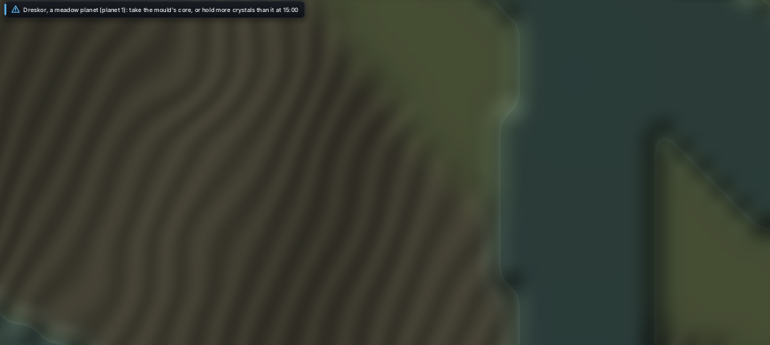
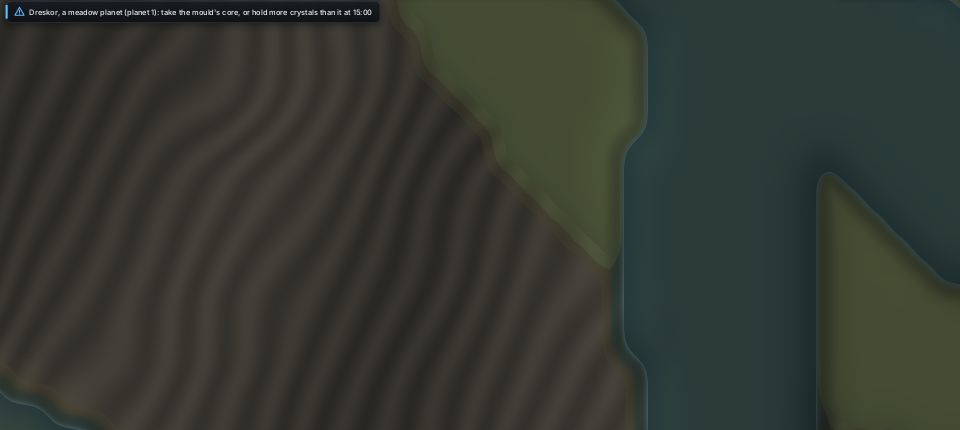
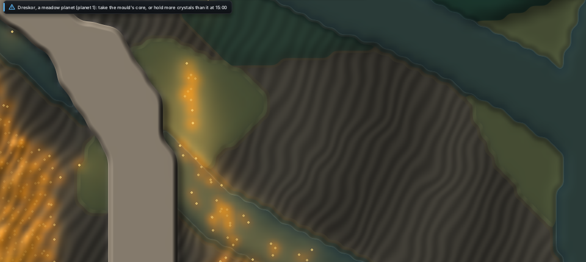
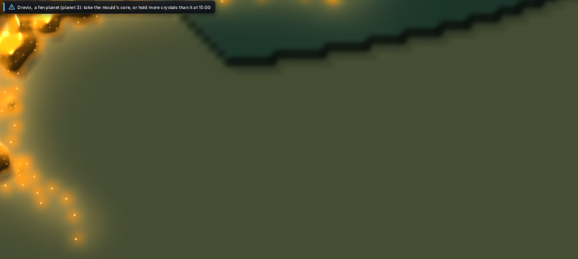
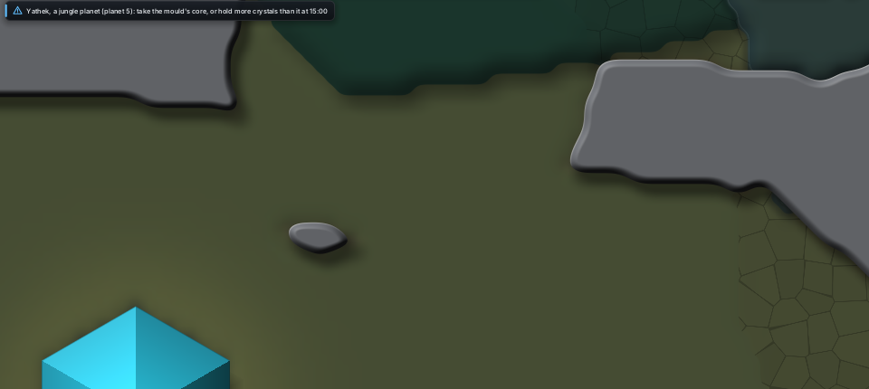
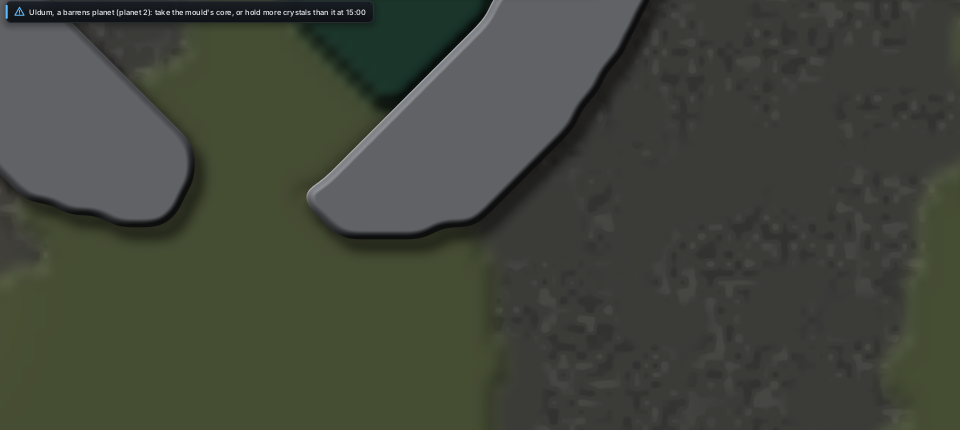
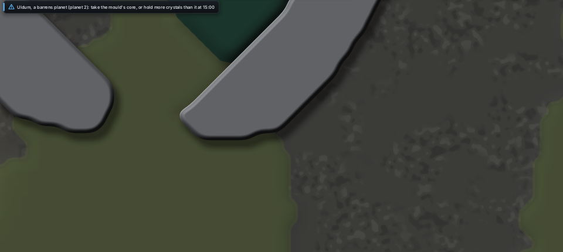
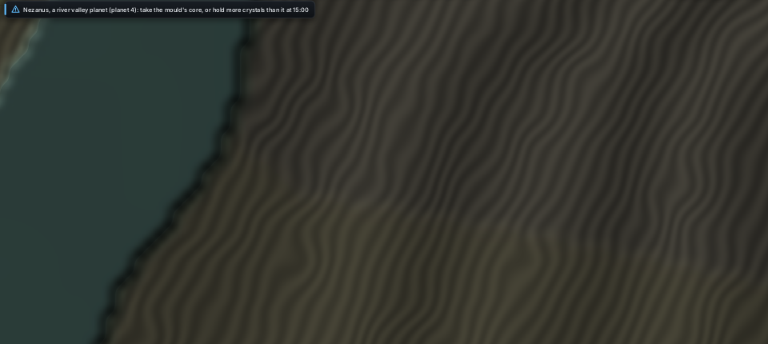
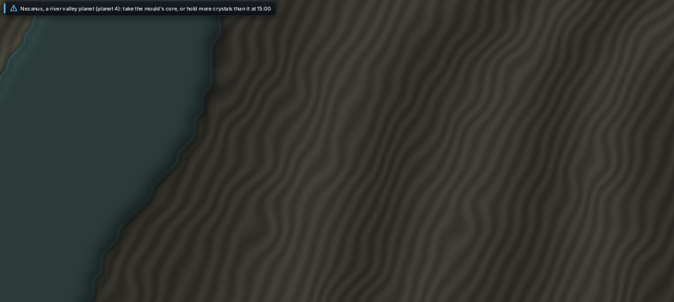
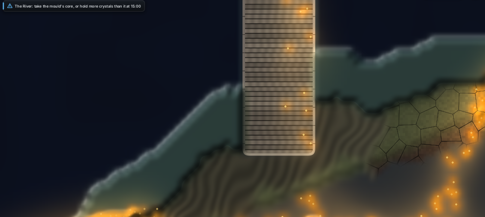
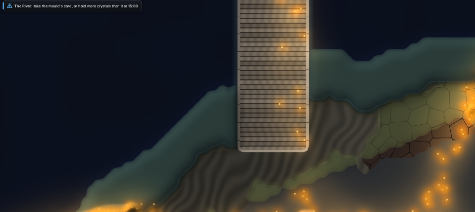
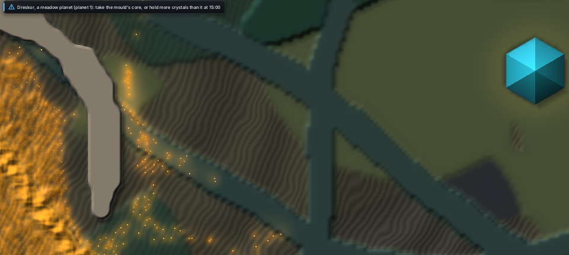
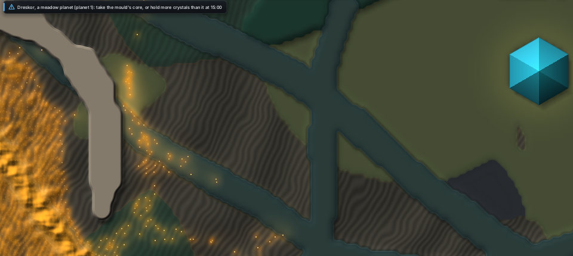
On the cloud's software GPU (llvmpipe), on the River at 1280x800 and zoom 6, the frame's GPU time went from 96-100 ms to 116-118 ms (three alternating rounds, median +18 ms). Most of that is the plants' density read over the 4 x 4 cells round each pixel. The first cut cost +38 ms; storing the bare ground's colour per cell in the prep pass halved it. The 1070 ran every frame under 2.6 ms at the 11-14 batch, so this is well inside its budget; it has not been timed there yet.